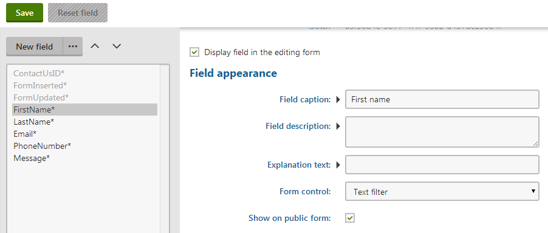
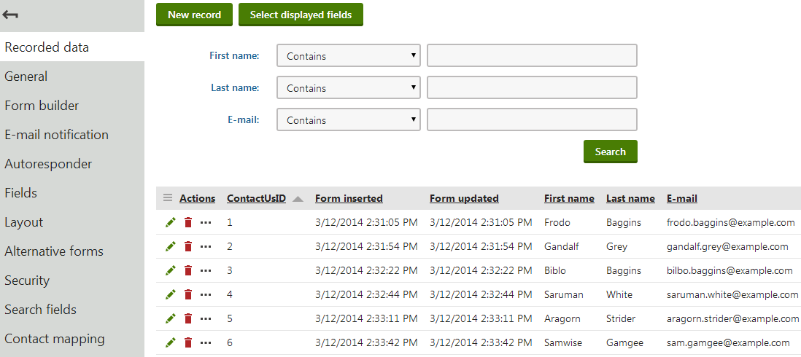

Displaying filters using alternative forms
You can use alternative forms to create filters for the records of forms, custom tables or page types.
Filtering alternative forms must always use the reserved keyword filter as their Code name.
The filters are then displayed in the following parts of the Kentico administration interface:
Forms -> Edit a form -> Recorded data
Custom table data -> Edit a custom table
Custom tables -> Edit a custom table -> Data
Pages -> Listing
By default, list filters appear when the number of records is 25 or more. You can change this limit by adding the following key into the appSettings section of your web.config file:
<add key="CMSDefaultListingFilterLimit" value="5" />Filtering is possible based on all fields that store the following types of values:
Text
Boolean (Yes/No)
Integer numbers
Long integer numbers
Decimal numbers
Date & time
The required fields need to be displayed in the alternative form and an appropriate form control must be assigned to each field. A filter form control is available for each data type:
Text filter
Boolean filter
Number filter
Date & time filter
Additionally, you can use the Drop-down list or Radio buttons form controls to create a filter based on option selection (for any field data type). When configuring the Data source setting for such a field, you can use the same options as in the original form field. However, we recommend adding a default option with an empty value that does not perform any filtering. For example:
;(No filtering)Value1Value2Value3Example - Creating a custom contact us form filter
The following example demonstrate how to create a filter for the Contact Us form on the sample Corporate Site. The same procedure can be used for any other form, custom table or page type.
In the default installation, the Contact Us form already has a pre-defined filter alternative form. You can just inspect its setting instead of going through the example.
Adding the filter form
Open the Forms application.
Edit (
 ) the Contact Us form.
) the Contact Us form.Switch to the Alternative forms tab.
There should already be a pre-defined filter form. Click Delete (
 ) so that you can go through the rest of this example and create your own filter from scratch.
) so that you can go through the rest of this example and create your own filter from scratch.
Click Create new form.
Enter a Display name.
Type filter into the Code name field (filter is a code name reserved specifically for this purpose).
Select the Make new fields hidden check box.
Click Save.
Configuring the filter fields
After you create the form, you need to modify the fields:
Switch to the Fields tab. In the listbox on the left, you should see all fields defined for the form. The first three are system fields and they are not needed in the filter, so you can leave them as they are.
Select the fourth field - FirstName.
In the Field appearance section, set the Form control to Text filter.

Setting the form control for a filter form fieldClick Save.
Repeat the steps 3 and 4 for the LastName and Email fields. This ensures that these fields are also included in the filter.
Disable the Phone number and Message fields by unchecking the Display field in the editing form option and clicking Save in both fields.
Result
Once you have the filter created, return to the form's editing interface and select the Recorded data tab. You can try filtering based on various parameters.

The filter defined by the alternative form
Note: By default, the filter only appears if 25 or more records are present in the list. To see the filter, you either need to create at least 25 records, or use the CMSDefaultListingFilterLimit web.config key to lower the filter limit accordingly.